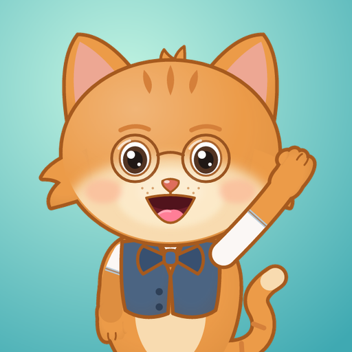

Котик Марк · learning games for children aged 2–5
Effective date · Действует с · Чинна з · Platí od: 07.11.2026
Mark the Cat for iPhone and iPad (the "Game", bundle ID com.markthecat.games) is a set of learning mini-games for children aged 2–5. It is built so that it does not collect any data at all.
None. The Game does not collect, store on any server or share with anyone any personal or other data, including name, age, e-mail, phone number, device or advertising identifiers, location, contacts, photos, video, microphone audio, usage analytics or crash reports. That is why its App Privacy details on the App Store say "Data Not Collected".
The Game works fully offline and does not connect to the internet. It asks for no permissions — no camera, microphone, photos, location, contacts or notifications. It does not track the child or you across other apps and websites, so it never shows the App Tracking Transparency request.
Only the game progress (which games are finished) and the settings chosen in the parents' section (sounds, Mark's voice, music, volume). They are kept in the Game's own storage on the device (iOS UserDefaults) and are never sent to us or to anyone else. The interface language is taken from the device settings and is not stored.
If iCloud Backup or computer backups are turned on, iOS may include this data in your own device backup, as it does for every app; we have no access to it. Everything is deleted when the Game is deleted from the iPhone or iPad.
The Game has no ads, no in-app purchases and no subscriptions.
The Game uses no third-party SDKs for analytics, advertising, sign-in or data storage.
The Game is designed for children and follows the App Store rules for children's apps: no ads, no tracking, no data collection. The parents' section is protected by a simple arithmetic question so that young children do not open it by accident. The only link in the Game, the one to this policy, is placed there. Because no data is collected, no parental consent for data processing is required.
If the Game ever starts to use any data, this policy and the App Store listing, including its App Privacy details, will be updated first.
«Котик Марк» для iPhone и iPad (далее — «Игра», идентификатор приложения com.markthecat.games) — набор развивающих мини-игр для детей 2–5 лет. Игра устроена так, чтобы вообще не собирать данные.
Никакие. Игра не собирает, не хранит на серверах и никому не передаёт никаких персональных или иных данных: имя, возраст, e-mail, номер телефона, идентификаторы устройства или рекламы, геолокацию, контакты, фото, видео, звук с микрофона, статистику использования и отчёты о сбоях. Поэтому в разделе о конфиденциальности приложения в App Store указано, что данные не собираются.
Игра работает полностью без интернета и не подключается к сети. Она не запрашивает никаких разрешений — ни камеры, ни микрофона, ни фото, ни геолокации, ни контактов, ни уведомлений. Игра не отслеживает ни ребёнка, ни вас в других приложениях и на сайтах, поэтому никогда не показывает запрос на отслеживание (App Tracking Transparency).
Только прогресс игры (какие игры пройдены) и настройки родительского раздела (звуки, голос Марка, музыка, громкость). Они хранятся в собственном хранилище Игры на устройстве (iOS UserDefaults) и никогда не отправляются ни нам, ни кому-либо ещё. Язык интерфейса берётся из настроек устройства и не сохраняется.
Если включено резервное копирование в iCloud или на компьютер, iOS может включить эти данные в вашу собственную резервную копию устройства, как и данные любого приложения; у нас к ним доступа нет. Всё удаляется вместе с Игрой, когда её удаляют с iPhone или iPad.
В Игре нет рекламы, покупок внутри приложения и подписок.
Игра не использует сторонние SDK для аналитики, рекламы, входа в аккаунт или хранения данных.
Игра создана для детей и следует правилам App Store для детских приложений: без рекламы, без отслеживания, без сбора данных. Родительский раздел защищён простым примером на сложение, чтобы малыш не открыл его случайно. Единственная ссылка в Игре — на эту политику — находится именно там. Поскольку данные не собираются, согласие родителей на их обработку не требуется.
Если Игра когда-нибудь начнёт использовать какие-либо данные, мы заранее обновим эту политику и страницу в App Store, включая раздел о конфиденциальности приложения.
«Котик Марк» для iPhone та iPad (далі — «Гра», ідентифікатор застосунку com.markthecat.games) — набір розвивальних міні-ігор для дітей 2–5 років. Гра влаштована так, щоб узагалі не збирати даних.
Жодних. Гра не збирає, не зберігає на серверах і нікому не передає жодних персональних чи інших даних: ім’я, вік, e-mail, номер телефону, ідентифікатори пристрою чи реклами, геолокацію, контакти, фото, відео, звук із мікрофона, статистику використання та звіти про збої. Тому в розділі про конфіденційність застосунку в App Store зазначено, що дані не збираються.
Гра працює повністю без інтернету й не підключається до мережі. Вона не запитує жодних дозволів — ні камери, ні мікрофона, ні фото, ні геолокації, ні контактів, ні сповіщень. Гра не відстежує ні дитину, ні вас в інших застосунках і на сайтах, тому ніколи не показує запит на відстеження (App Tracking Transparency).
Лише прогрес гри (які ігри пройдено) і налаштування батьківського розділу (звуки, голос Марка, музика, гучність). Вони зберігаються у власному сховищі Гри на пристрої (iOS UserDefaults) і ніколи не надсилаються ні нам, ні комусь іще. Мова інтерфейсу береться з налаштувань пристрою й не зберігається.
Якщо ввімкнено резервне копіювання в iCloud або на комп’ютер, iOS може додати ці дані до вашої власної резервної копії пристрою, як і дані будь-якого застосунку; ми до них доступу не маємо. Усе видаляється разом із Грою, коли її видаляють з iPhone чи iPad.
У Грі немає реклами, покупок усередині застосунку й підписок.
Гра не використовує сторонніх SDK для аналітики, реклами, входу в акаунт чи зберігання даних.
Гру створено для дітей, і вона дотримується правил App Store для дитячих застосунків: без реклами, без відстеження, без збору даних. Батьківський розділ захищено простим прикладом на додавання, щоб малюк не відкрив його випадково. Єдине посилання в Грі — на цю політику — розміщено саме там. Оскільки дані не збираються, згода батьків на їх обробку не потрібна.
Якщо Гра колись почне використовувати будь-які дані, ми заздалегідь оновимо цю політику й сторінку в App Store, зокрема розділ про конфіденційність застосунку.
„Mačiatko Mark“ pre iPhone a iPad (ďalej „Hra“, identifikátor aplikácie com.markthecat.games) je súbor náučných minihier pre deti od 2 do 5 rokov. Je vytvorená tak, aby nezhromažďovala žiadne údaje.
Žiadne. Hra nezhromažďuje, neukladá na žiadne servery a s nikým nezdieľa žiadne osobné ani iné údaje: meno, vek, e-mail, telefónne číslo, identifikátory zariadenia alebo reklamy, polohu, kontakty, fotografie, video, zvuk z mikrofónu, štatistiky používania ani hlásenia o pádoch. Preto je v údajoch o súkromí aplikácie v App Store uvedené, že sa nezhromažďujú žiadne údaje.
Hra funguje úplne bez internetu a nepripája sa k sieti. Nežiada žiadne povolenia — ani kameru, mikrofón, fotografie, polohu, kontakty či upozornenia. Hra nesleduje dieťa ani vás v iných aplikáciách a na webových stránkach, preto nikdy nezobrazuje žiadosť o sledovanie (App Tracking Transparency).
Iba postup v hre (ktoré hry sú dokončené) a nastavenia rodičovskej sekcie (zvuky, Markov hlas, hudba, hlasitosť). Ukladajú sa vo vlastnom úložisku Hry v zariadení (iOS UserDefaults) a nikdy sa neodosielajú nám ani nikomu inému. Jazyk rozhrania sa preberá z nastavení zariadenia a neukladá sa.
Ak je zapnuté zálohovanie do iCloudu alebo do počítača, iOS môže tieto údaje zahrnúť do vašej vlastnej zálohy zariadenia, rovnako ako údaje každej aplikácie; my k nim nemáme prístup. Všetko sa odstráni spolu s Hrou, keď ju vymažete z iPhonu alebo iPadu.
Hra neobsahuje reklamy, nákupy v aplikácii ani predplatné.
Hra nepoužíva žiadne SDK tretích strán na analytiku, reklamu, prihlasovanie ani ukladanie údajov.
Hra je určená deťom a dodržiava pravidlá App Store pre detské aplikácie: bez reklám, bez sledovania, bez zhromažďovania údajov. Rodičovská sekcia je chránená jednoduchým príkladom na sčítanie, aby ju malé dieťa neotvorilo náhodou. Jediný odkaz v Hre — na tieto zásady — je umiestnený práve tam. Keďže sa nezhromažďujú žiadne údaje, súhlas rodičov so spracovaním údajov nie je potrebný.
Ak Hra niekedy začne používať akékoľvek údaje, najprv aktualizujeme tieto zásady aj stránku v App Store vrátane údajov o súkromí aplikácie.